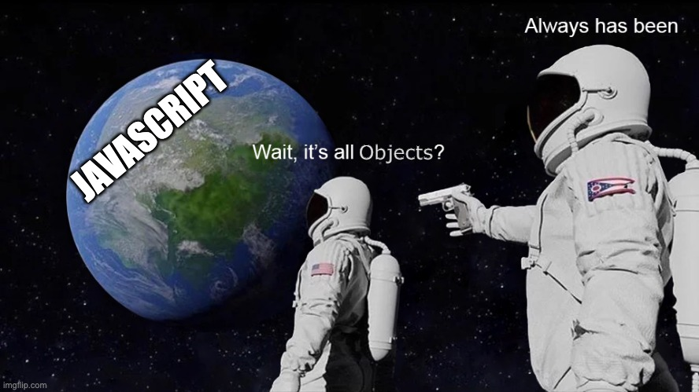

Guarding
Also called "safe property access". This guards against a TypeError
object data
const obj = {
key: {
key2: 'val'
},
}
New in ES6+ (recommended)
// Optional Chaining
// ?.
obj?.key?.key2 // 'val'
obj?.key2?.key // undefined
The old "Guard"
// `&&` as a "Guard"
obj && obj.key // { key2: 'val'}
obj && obj.key2 && obj.key2.key
// false
Optional Chaining
?.
let obj = { key: { maybe: { nested: 1} } }
obj.key.maybenot.nested // Throws an error
obj.key.maybenot?.nested // Evaluates to `undefined`
obj?.key?.maybenot?.nested // Chain multiple for full safety
Checking for Properties
New in ES6+
The old "Guard"
// the 'in' keyword:
'key' in obj // true
'fake' in obj // false
// hasOwnProperty Method
obj.hasOwnProperty('key') // true
obj.hasOwnProperty('fake') // false
The Object Constructor
let obj = new Object() // {}
// then populate keys manually
obj.key = 'value'
obj.key2 = { key: 'val'}
Good to know, but still recommend declaring object literals: code>let obj = {}
Object.create & Inheritance
Object.create()
const person = {
isHuman: true,
greet:() => console.log(`Hello there!`);
};
const scooby = Object.create(person);
scooby.name = "Scooby Doo";
// "name" is a property set on "me", but not on "person"
scooby.isHuman = false;
// inherited properties can be overwritten
scooby.greet() // 'Hello there!'
Merging Objects
Object.assign()
This overwrites the target object and avoids inheritance
const target = { a: 1, b: 2 };
const source = { b: 4, c: 5 };
const returnedTarget = Object.assign(target, source);
console.log(target);// Object { a: 1, b: 4, c: 5 }
console.log(returnedTarget);// Object { a: 1, b: 4, c: 5 }
Cloning an Object with .assign()
Recall Mutating vs. Non-Mutating Operations (creating a copy)
This will avoid the potential collisions due to passing by Reference
const obj = {name: 'Jamie', isHuman: true};
const uniqueObj = Object.assign({}, obj)
// now there are two separate objects in memory
// each with the same properties
Note: this creates a shallow copy (omits deeply nested properties)
Creating Deep Copies of Objects MDN
for deep copies of objects use structuredClone()
const myObj = {
num: 5,
nested: [1, 2, 3]
}
const shallowClone = Object.assign({}, myObj)
const deepClone = structuredClone(myObj)
deepClone.push(4)
console.log(deepClone.nested) // [1, 2, 3, 4]
console.log(myObj.nested) // [1, 2, 3]
shallowClone.nested.push(4) // mutates the original object
console.log(myObj.nested) // [1, 2, 3, 4]
Pass by Reference vs Pass by Value
illustration
Objects (& Functions, Arrays) are passed by Reference
Primitives are passed by Value
let obj = { key: 'value' }
let another = obj
another.test = 'same object in memory'
console.log(obj) // {key: 'value', test: 'same object in memory'}
Mutating Objects
let obj = { key: 'value' }
obj.prop = 1 // add a new key-value pair
obj.key = 5 // change an existing value
console.log(obj) // {key: 5, prop: 1}
delete obj.key // delete a key-value pair
console.log(obj) // {prop: 1}
Looping in Objects
The For...in Loop (Does not garauntee order)
const object = {a: 1, b: 2, c: 3};
for (const property in object) {
console.log(`${property}: ${object[property]}`);
}
// "a: 1"
// "b: 2"
// "c: 3"
Converting an Object to an Array
Often it's easier to manipulate Objects as arrays (and then turn it back afterwards)
const obj = {a: 1, b: 2, c: 3};
Object.entries(obj) // [['a', 1],['b', 2],['c', 3]]
Object.keys(obj) // ['a', 'b', 'c']
Object.values(obj) // [1, 2, 3]
// Reverse the process:
Object.fromEntries([['a', 1],['b', 2],['c', 3]]) //{a: 1, b: 2, c: 3}
Objects Challenges
Take 10 minutes & try to solve the free challenges here:
- JS Objects
Group By Method
`Object.groupBy`
const inventory = [
{ name: "spinach", type: "vegetable", amount: 5 },
{ name: "bananas", type: "fruit", amount: 0 },
{ name: "almond", type: "nut", amount: 23 },
{ name: "cherries", type: "fruit", amount: 5 },
{ name: "pistachio", type: "nut", amount: 22 },
]
// call it w/ an array & a callback fn
// that returns a string
const result = Object.groupBy(
inventory,
({ type }) => type
)
console.log(result)
→
// returns:
{
vegetable: [
{ name: 'spinach', type: 'vegetable', amount: 5 },
],
fruit: [
{ name: "bananas", type: "fruit", amount: 0 },
{ name: "cherries", type: "fruit", amount: 5 }
],
nut: [
{ name: "almond", type: "nut", amount: 23 },
{ name: "pistachio", type: "nut", amount: 22 }
]
}
Protecting Objects
Making an object read-only has some "gotchas"
const obj = {key: 'value'}
obj.key = 3 // this works
obj = {name: 'new'} // Throws Error
Object.seal(obj)
Object.freeze(obj)
Object.seal()
Prevents deletion of properties
const obj = {prop: 2 };
Object.seal(obj);
// can mutate a sealed object's existing properties
obj.prop = 3;
console.log(obj.prop);// 3
// cannot delete when sealed
delete obj.prop;
// cannot add new properties
obj.greet = 'hello'
console.log(obj.prop, obj.greet);// 3, undefined
Object.freeze()
Prevents deletion and alteration of properties. But only on 1st level of nesting
const obj = {prop: 2, key: {greet: 'hello'}};
Object.freeze(obj);
// cannot mutate nor delete a frozen object
obj.prop = 3;
obj.greet = 'hello'
delete obj.prop
console.log(obj)
// {prop: 2, key: {greet: 'hello'}}
// But freezing is "shallow"
obj.key.greet = 'Aloha'
console.log(obj)
// {prop: 2, key: {greet: 'Aloha'}}
Recursively Freezing an Object
This is not a native JS function. You have to write it yourself. But here is an implementation we can use: Github
function deepFreeze (o) {
Object.freeze(o);
Object.getOwnPropertyNames(o).forEach(prop => {
if (o.hasOwnProperty(prop) && o[prop] !== null
&& (typeof o[prop] === "object" || typeof o[prop] === "function")
&& !Object.isFrozen(o[prop])) {
deepFreeze(o[prop]);
}
});
return o;
};
The this keyword MDN
/ W3
const person = {
name: 'Chris',
greet: function() {
alert('Hello ' + this.name + ', Welcome!');
},
lambdaGreet1: () => { // `this` is `window`
alert('Hello ' + this.name + ' Welcome!');
},
lambdaGreet2: () => {
alert('Hello ' + person.name + ' Welcome!');
}
}
Lexical Scoping: Arrow functions do not bind a value to this. They will take
the Window value for this.
Prototypes
We've been using Objects this whole time!

Prototype Objects
Everything is an inspectable object, except null, undefined.
(null is
kind of an object though, it's complicated)
Even Primitives can access their prototype's methods, because they're implicitly wrapped by an Object - autoboxing
String.prototype
Number.prototype
Boolean.prototype
Symbol.prototype
BigInt.prototype
Array.prototype
Object.prototype
Function.prototype // no methods/properties of its own
Revisiting Symbol
Symbol()
let Sym = Symbol("Sym");
console.log(_Sym.description);
- creates a unique identifier
- Used a unique, collision-free key on objects
- Especially if you're going to add a property to the Prototype, which is known as "monkey patching" but...
"Monkey Patching" Prototypes considered harmfulMedium
// Add useful toString Method to js objects:
Object.prototype.toString = function() {
return JSON.stringify(this)
}
This can lead to naming collisions with other libraries
This is what Symbol is for!! So use it if you must do this.
// toString path with `Symbol`:
const toString = Symbol('toString')
Object.prototype[toString] = function() {
return JSON.stringify(this)
}
{a: 1, b: 2}[toString]() // "{\"a\":1,\"b\":2}"
Safe Serialization on all prototypes
Using Symbol for safe global prototypal inheritance
const serialize = Symbol('serialize');
Boolean.prototype[serialize] = Number.prototype[serialize] = String.prototype[serialize] =
function() { return JSON.stringify(this) }
Function.prototype[serialize] = function() { return this.toString() }
Array.prototype[serialize] = function() {
const values = this.map(item => item[serialize]()).join(', ')
return '['+values+']'
};
Object.prototype[serialize] = function() {
const properties = Object.entries( this ).map(
entry => entry[0][serialize]() +': '+ entry[1][serialize]()
)
return '{'+properties+'}'
};
RegExp.prototype[serialize] = function() { return '/'+this.source+'/'+this.flags }
ES6+ We've already Seen
let, const- String Template Literals
-
Nullish Coalescer
??, Optional Chaining
?.
-
Arrow Functions:
(x, y) => x + y
Symbol, BigInt-
Ternary Operator:
condition ? true : false
New ES6+ Features
- Tagged Templates
- Destructuring & Param Context matching
- Rest & Spread operators
- Object Propery/Method Shorthand
- Computed Properties
- For of & For in loops
- Try - Catch
- Map & Set
- Promises & fetch
- Extras: Recursion, Internationalization & Generators
New Feature Resources
Concise Index of them at
es6-features.org
ES6 help
ES6 README
Remember these? 🧵 String Template Literals
MDN
Multiline Strings: uses backticks
` ` (single or multi line)
let myStr = `This is
a fancy
multiline string`
String Interpolation: allows embeddable javascript
expressions with the ${ } syntax
let myVar = 'fancy'
let myFn = () => typeof myVar
let myStr = `This is
a ${myVar}
multiline ${myFn()}`
🏷️ Tagged Template Functions
MDN
You can create a special function from a template string literal which
takes the template string as its parameters:
function myTag(string, person, job) {
console.log(string, person, job)
}
let person = 'Jamie'
let job = 'developer'
myTag`That person's name is ${ person } and they are a ${ job }.`
It will provide as parameters the chunked string in an array, and the
other parameters separately.
Destructuring
let { 🍞, 🥬, 🍅, 🧅, 🥓, 🧀, 🥩, 🍞 } = 🍔
If you think about it, a bacon cheeseburger is a data structure
because it's just a list of its own ingredients.
Arrays & Objects are essentially just lists, too. Destructuring lets
us unpack arrays or objects into their distinct consituent elements
and save them into variables on the parent scope.
- Array Destructuring
- Object Destructuring
- Parameter Context matching
It's kinda magical
// destructure the magic & the horse from a unicorn
let { ✨, 🐴 } = 🦄
Object Destructuring
const { 🍞, 🥬, 🍅, 🧅, 🥓, 🧀, 🥩, 🍞 } = 🍔
const burger = {
topBun: 'sourdough',
condiment: 'ketchup',
lettuce: 'iceberg',
tomato: 'beefsteak',
bacon: 2,
cheese: 'cheddar',
burger: 'angus',
bottomBun: 'sourdough'
}
// destructure properties as needed into global namespace
// & provide alternate identifiers to avoid naming collisions
const { tomato, bacon, cheese, burger: patty } = burger
Array Destructuring
let list = [ 1, 2, 3 ]
let [ a, , b ] = list
// We can avoid a temp variable when swapping
[ b, a ] = [ a, b ]
// can also use default assignment here
let [d, e, f, g=7] = list
Common Use Case
Destructuring Config Objects to extract just the properties you need.
const user = {
user: 'jdoe',
email: 'jdoe@home.com'
fullName: {
first: 'John',
last: 'Doe'
}
};
let { email, fullName: { first } } = user
let myStr = `${first}'s email is ${email}`;
console.log(myStr); // "John's email is jdoe@home.com"
Default Value Assignment for Destructuring
Available to use for either Objects or Arrays
let list = [ 7, 42 ]
let [ a = 1, b = 2, c = 3, d ] = list
console.log(a, b, c, d) // 7, 42, 3, undefined
const burger = { /* ...previous values... */}
const { tomato, bacon, onion, pickles = 'dill' } = burger
console.log(tomato, bacon, onion, pickles)
// ↳ 'beefsteak', 2, undefined, 'dill'
Parameter Context Matching
You can think of this as destructuring for parameters
Handy when you need just a couple of values in an object/array
parameter.
function f ([ name, val ]) {
console.log(name, val)
}
let arr = ['John', '#42']
f(arr) // logs: 'John', '#42'
function g ({ name: n, val: v }) {
console.log(n, v)
}
let obj = {name: 'John', val: '#42'}
g(arr) // logs: 'John', '#42'
Using Destructuring With Default params
✨ Combine these for super powers! ✨
function f([x = 1, y = 2]) {
return x + y
}
f([]) // 3
f() // Type Error, won't work without the array
function g({a, b = 2}) {
let ap = a ?? 0 // Nullish Coalescer can guard undefined
return ap + b
}
g({a: 4}) // 6
g() // Type Error, won't work without the object
Rest & Spread Operators
...
Rest: to gather up the rest of the values into
an Array or Object. Used in function parameters.
Spread: to spread out encapsulated values into
loose values. Used on arrays and objects.
encapsulated here means that the values are contained in an
object or an array.
Object Spread
const names1 = {cat: 'Bob'}
const names2 = {dog: 'Fred', alligator: 'Benedict'}
const copy = { ...names2 } // Avoid pass by Reference trouble
const newNames = { ...names1, ...names2 };
Array Spread
let arr = [1, 2, 3]
let arr2 = [...arr] // copy of arr
let arr3 = arr.slice() // also a copy of arr
It can be used to create a copy of an array, similar to
.slice()
Rest
Used in for function parameters to create a
Variadic function (a function that accepts a varying number of
parameters)
Function Arity: The number of parameters a function accepts
(see Function.length)
function addFirstTwo(a, b, ...manyMoreArgs) {
console.log(manyMoreArgs) // will gather up into array
return a + b
}
addFirstTwo(1,1,5,6,7) // returns 2
Object Property & Method Shorthand
Method Shorthand uses Function Declaration but it:
- omits the colon & the
function keyword
- preserves the local value of
this
let shout = (pet) => console.log(pet.toUpperCase() + '!!!')
let cat = 'meow';
let dog = 'woof';
let myPets = {
shout, // arrow functions written like properties
cat,
dog,
speak (pet) { // function declaration shorthand
console.log(this[pet])
}
}
myPets.speak('cat') // 'meow'
// If you have those variables declared anyways,
// then it can be shorter
// than the old syntax
let myPets = {
shout: shout,
cat: cat,
dog: dog,
speak: function (pet) {
console.log(this[pet])
}
}
myPets.speak('cat') // 'meow'
Computed Properties
let makeKey = key => key;
let key = 'key'
// Before was done one by one like this:
let obj = {};
obj[key] = 'value';
// Now can be done in bulk:
let computedObj = {
[key]: 'value',
[makeKey('string')]: 'value',
[makeKey('name')]: 'value'
}
For Of Loops & For In Loops
For Of
loops over values
(think of built in .valueOf method)
For In
loops over key
(think of 'key' in obj syntax from earlier)
const array1 = ['4', '5', '6'];
for (const value of array1) {
console.log(value);
} // prints 4, 5, 6
const obj = { a: 4, b: 5, c: 6 };
for (const key in obj) {
console.log(`obj.${key} = ${obj[key]}`);
} // prints 'a', 'b', 'c'
Try Catch
try {
fetchDataFromServer(success, error)
} catch (e) {
console.log(e)
redirectUserToHomeScreen()
}

Throwing Errors
let authenticate = false
if ( authenticate ) {
console.log('success')
userSignIn()
} else {
throw "Error: User authentication failed"
}
Use the throw statement to halt code execution & issue a custom exception.
Only use in places it can be caught. When the exception occurs, control transfers to the
catch block. The finally block always runs, error or not.
let authenticate = false
try {
if ( authenticate ) {
userSignIn()
} else {
throw "Error: User authentication failed"
}
} catch (e) {
console.log(e)
redirectUserToHomeScreen()
} finally { // run clean up code here
resetForm()
closeSession()
}
const myMap = new Map()
myMap.set('key', 'value')
myMap.set(true, 'value')
let func = key => null
myMap.set(func, 100)
myMap.has(func) // true
let obj = {a: 'A'}
myMap.set(obj, 'B')
myMap.get(obj) // 'B'
myMap.size // 3
myMap.delete('key') // true
myMap.clear() // deletes all
Not to be confused with Array.map()
Use Maps over objects when:
- its properties will be mutating frequently
- you need the
size property
- you need the properties to preserve their order.
- you need keys of any value
- not just
Strings or Symbols.
// Or initialize a Map w/ an
// array of entries (tuples):
const initMap = new Map([
['dog', 'woof'],
['cat', 'meow'],
]);
Looping over a Map
// Looping over a Map
// ✅ Using forEach OR for ... of
map1.forEach((value, key) => {
console.log(value, key); // woof dog, meow cat
});
for (const [key, value] of map1) {
console.log(key, value); // dog woof, cat meow
}
// ✅ Iterate over a Map's keys OR values
for (const key of map1.keys()) {
console.log(key); // dog, cat
}
for (const value of map1.values()) {
console.log(value); // woof, meow
}
Sets may only contain one of any particular value.
This makes them convenient as a way to remove duplicates in an array.
const numbers = [2,3,4,4,2,3,3,4,4,5,5,6,6,5,3,4,5]
const noDupes = [...new Set(numbers)] // [2,3,4,5,6]
const mySet = new Set()
mySet1.add(5)
mySet1.add('some text')
mySet1.add({a: 1, b: 2})
mySet1.has(5)
mySet1.size // 3
mySet1.delete(5)
More on Keyed Collections
Map, WeakMap, Set & WeakSet are all Keyed Collections
Refer to this
article
for more on when to use each one
- Map has a less common twin: WeakMap
- The less common
WeakMap has same API, except keys can only be objects or functions:
- Set has a less common twin: WeakSet
const myWeakMap = new WeakMap()
const myWeakSet = new WeakSet()
WeakMap may not be that useful. It's called "Weak"
because it allows garbage collection.